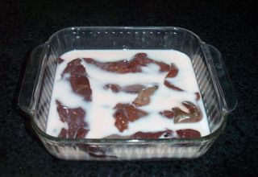
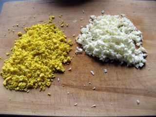
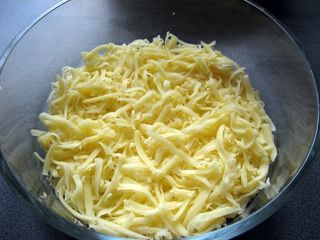
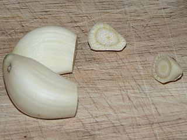
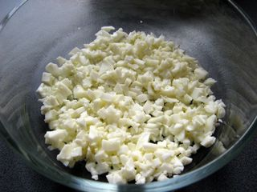

Шаг 1: готовим печень.

Говяжью печень обязательно разморозьте, оставив ее отдохнуть в раковине на некоторое время. Как только она оттает, промойте субпродукт холодной водой и поместите в глубокую тарелку, наполненную молоком, на 30-40 минут. Если этого не сделать, печень будет горчить.
Вымоченную печень очистите от пленок и нарежьте на небольшие порционные кусочки. После положите ингредиент в кастрюлю и, залив чистой водой, варите 15-20 минут после того, как жидкость закипит. Внимание: не забудьте убавить огонь после того, как вода в кастрюле начнет кипеть. Готовность печени проверяйте ножом или вилкой, она должна быть мягкой и хорошо протыкаться.
Вареный субродукт достаньте из кастрюли, остудите до комнатной температуры и нарежьте тонкой соломкой или натрите на крупной терке.
Шаг 2: готовим яйца.

Яйца так же нужно сварить. Для этого поместите их в сотейник и полностью залейте водой. Затем, поставив на плиту, доведите до кипения, а после варите на среднем огне в течение 10-12 минут. Готовые яйца тут же нужно поместить под струю холодной ледяной воды до полного остывания. И только после очистить их от скорлупы и либо натереть, либо нарезать мелкими кубиками.
Шаг 3: подготавливаем сыр.

Сыр измельчите с помощью средней или мелкой терки, на ваш вкус.
Шаг 4: подготавливаем чеснок.

Зубчики чеснока очистите от шелухи, отрежьте у них нижние кончики. Измельчите этот пряный ингредиент с помощью специального пресса или протерев на мелкой терке.
Шаг 5: смешиваем салат с печенью и яйцами.

Салат с печенью и яйцами выкладывайте слоями. Сперва идут яйца. А для красоты можно отделить белки от желтков и положить их отдельными прослойками друг на друга. Промажьте этот слой майонезом, поперчите и посолите. Следующим шагом укладывайте говяжью печень, а на нее чеснок. Вновь салат нужно чуть посолить и поперчить, а так же добавить заправку. И последним, верхним слоем в салате должен быть тертый сыр. Вот и все, отправьте ваше кулинарное творение в холодильник на 10-15 минут, чтобы слои немного пропитались, после чего готовое блюдо можно подавать на стол.